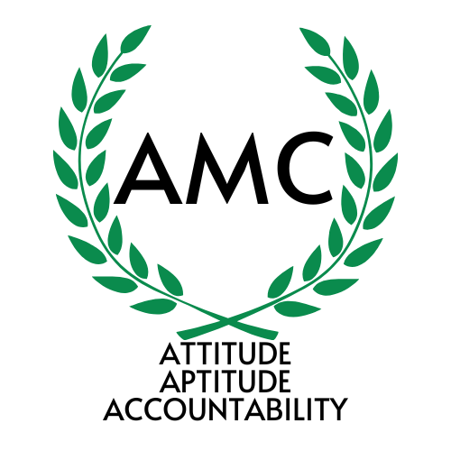
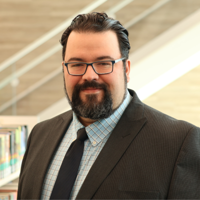
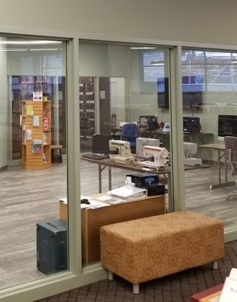
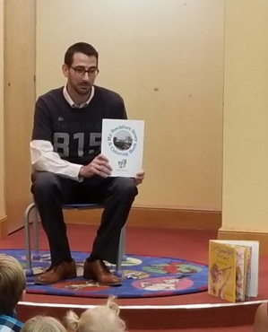
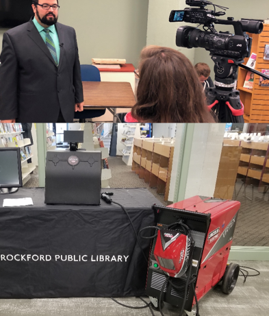
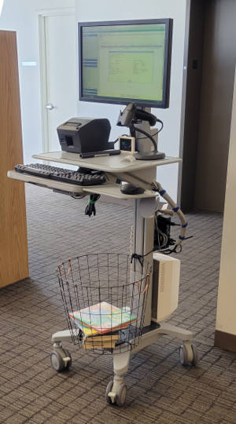
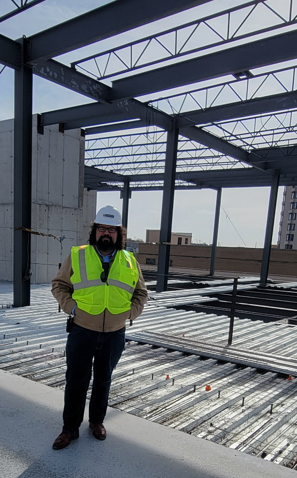

Public Library Leadership
It is appropriate to state here, at the outset, that little is accomplished in a vacuum and there are many mentors, leaders, coworkers and teammates that made the following list possible.
Community-wide Makerspace
Rockford Public Library/Rockford Maker Center - 2016 to 2019 and 2021 to present
A grant for equipment to provide real hands on experience with drill presses, a lathe, table and mitre saws, welding equipment, and a 4-foot by 8-foot CNC
router in 2016 kicked off a seven year search for an acceptable location. There were several near misses of getting the concept off the ground, but we were
plagued by issues from library risk insurers being unwilling to cover such devices in a library, to personnel changes in partner organizations, to competing
interests, and even intrigue! Many, many meetings and building walkthroughs culiminated in a 501(C)3 and a strong partnership with the local Career College and a location
in the same mall in which the College is located. We hvae had several cohorts of welding students who took our art welding classes and have discovered an
interest in actually pursuing welding and enrolling at the college. Our goal is to bring together entrepreneurs, hobbyists, and those seeking employable skills
so as to generate new and exciting opportunities in the Rockford area.
Maker Lab
Rockford Public Library - 2017
When the Rockford Public Library Main library was to be torn down to remediate the underground coal tar tanks from a former coal gasification plant,
I advocated for a maker space with glass walls to be placed in the center of the first floor on our two-story interim main library to demonstrate
the impact a makerspace could have in our library. The result was successful and many stories of empowerment and community arose from the 600-square-foot
room with sewing machines, a laser cutter, a Cricut Cutter, Raspberry Pi's, serger, embroidery machine, 3D-printers, and more. Five years later, the
success of this trial space would lead to a larger version of the Maker Lab being incorporated into the replacement Main library,
expanding to include a podcast studio and green screen recording room.
815 Day Community Coloring Book
Rockford Public Library - 2017
In celebration of 815 Day (815 is one of the main area codes in our City and this is celebrated on August 15th annually) I embarked upon a creative endeavor
authoring a children's book of interesting historical facts from our City's history and added objects for coloring
by either free-handing, tracing pictures I took, reaching out to local companies for the rights to use their images, and using some license free clipart.
The book was funded by the RPL Foundation and the printing cost was discounted by offering to have the print company include their logo on the back cover. Copies sold
for a dollar. It wasn't a fundraiser by any means, but it did manage to recoup the cost of creation. The Mayor read a copy at one of the library branches, and I
conducted readings at two other branches.
Virtual Welding in the Library
Rockford Public Library - 2018
My work trying to establish the Rockford Maker Center led me to meetings with many in the trades in Rockford. One of these meetings brought about a wonderful
partnership with Plumbers and Pipefitters Local 23 who had a virtual reality welding apparatus. We hosted this device in our Maker Lab and provided an opportunity
for people to get a hands-on perspective of what it was like to use welding equipment and receive feedback on the quality of the weld they produced electronically.
We referred several people to the Local's apprenticeship drives who thought they might be interested after interacting with the device at the library.
Mobile Expeditions
Rockford Public Library - 2018
Using the library's aging delivery van, some tables, a pop-up canopy or two, and some inspiration, I planned a series of 10 stops at various community events,
coordinated with public service staff from across all library locations to assist, and shared robotics, local history information, some very limited checkout access,
and sign people up for library cards, all while sharing what library resources were available. We had 494 conversations with people and issued 83 new library cards.
It became obvious that in our community, the usual channels of television, radio, social media, and web were not getting to many people who had no idea what was goin
on at the library. With this data, I designed a case study and pitched restoring mobile library services to the RPL Board of Trustees who saw the value and RPL's first
custom-built mobile library was acquired in 2021. The fleet count now sits at three and an agressive schedule ensures library service saturation across the community
in ways that brick and mortar could never achieve alone.
Roaming Reference
Rockford Public Library - 2021
With then Executive Director, Lynn Stainbrook, desiring to remove large clunky service desks from public service areas and replace them with something that allowed staff
to be more mobile and able to thereby provide better customer service, the IT team and I worked together to come up with a viable solution. We landed upon an Ergotron cart
similar to those seen in healthcare that are powered my interchangeable batteries. Each cart has a receipt printer, voip phone, barcode scanner, and a basket to assist in
pulling holds or items in need of repair. The project allowed RPL to drastically reduce the size of our holdshelves, get expired holds back on the shelves faster, and pull
holds from a live list, rather than a report printed in the morning. This shift paved the way to increase the frequency of our hold notices to customers, significantly reducing
the time customers wait to get items as well as reducing the time that an item sits on the hold shelf.
Replacement Main Libray Construction Project
Rockford Public Library - 2018 to 2024
When the local electrical utility, Commonwealth Edison, elected to remediate the land upon which the Rockford Public Library Main library stood for nearly 120 years, the process
required the demolition and reconstruction of the Main library. I was part of the process from touring other libraries to get ideas, to public input sessions, to design meetings with
architects, a pandemic occurring in the midst of remediation and the beginning of site work and construction, reviewing plans, construction meetings, handling the accounting for the
$45,000,000 construction project, and coordinating the library's IT team with the construction team throughout. It was an arduous, wild, and rewarding ride.





